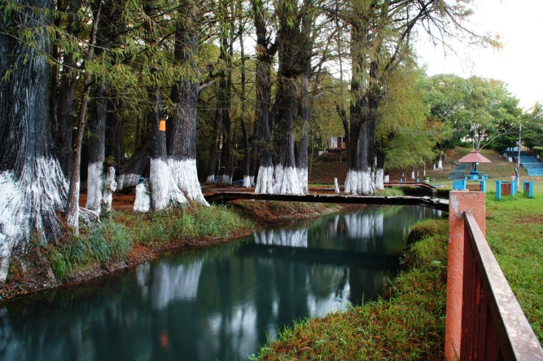

SOBRE TZIMOL
Tzimol es un municipio ubicado en el estado de Chiapas, en la región de la Selva. Se encuentra al sureste de México, cerca de la frontera con Guatemala. Chiapas es conocido por su diversidad cultural, belleza natural y sitios arqueológicos En la época contemporánea, y según testimonio de sus propios habitantes, Tzimol participó en los acontecimientos de la Revolución Mexicana que conmovieron al Estado; algunos de esos hechos históricos tuvieron como escenario su propio ámbito geográfico.
LUGARES ATRACTIVOS EN EL PUEBLO
Los principales atractivos turísticos son: Centro Recreativo la Rejoya a 13 km de la ciudad de Comitán, se puede encontrar un conjunto de palapas para día de campo. Cascada San Vicente o El Chiflón a 34 Kilómetros de Comitán sobre la carretera Tzimol-Pujiltic es conveniente para la práctica del turismo de aventura y vestigios arqueológicos en pueblo viejo.
¿COMO LLEGAR A TZIMOL?
Viniendo de Comitán, el mirador Don Rubén permite apreciar una panorámica completa de la polje que ocupa el municipio de Tzimol. A 15 kilómetros de Comitán, es ésta una población singular por su posición dentro de una cuenta cárstica, pero también por su disposición urbanística de casas y huertas que alternan con los cañaverales y por la conservación de su arquitectura tradicional. Los antiguos trapichesque se pueden observar en varios sitios son por ello parte importante de su patrimonio histórico.
ENLACE DE DONDE SE ENCUENTRA UBICADOACTIVIDADES QUE SUELEN REALIZARSE SEGUIDO
Este pequeño poblado se puede disfrutar de la observación de cañaverales, fabricación de la tradicional panela, la siembra de caña, la fabricación de alcohol. Se puede encontrar la rejoyita, tambien conocida como el ojo de agua, y comer ricos pescados frescos que son elegidos de estanques. A este mismo municipio pertenecee la Cadena de Cascadas el Chiflón, y es en el Parque Recreativo la Rejoyita donde nace el agua del río San Vicente.

MI PAGINA WEB HECHO POR:
ALEJANDRO ROUSSE GORDILLO MATERIA:TALLER DE DESARROLLO 1 SEMESTRE:3ERO GRUPO:O